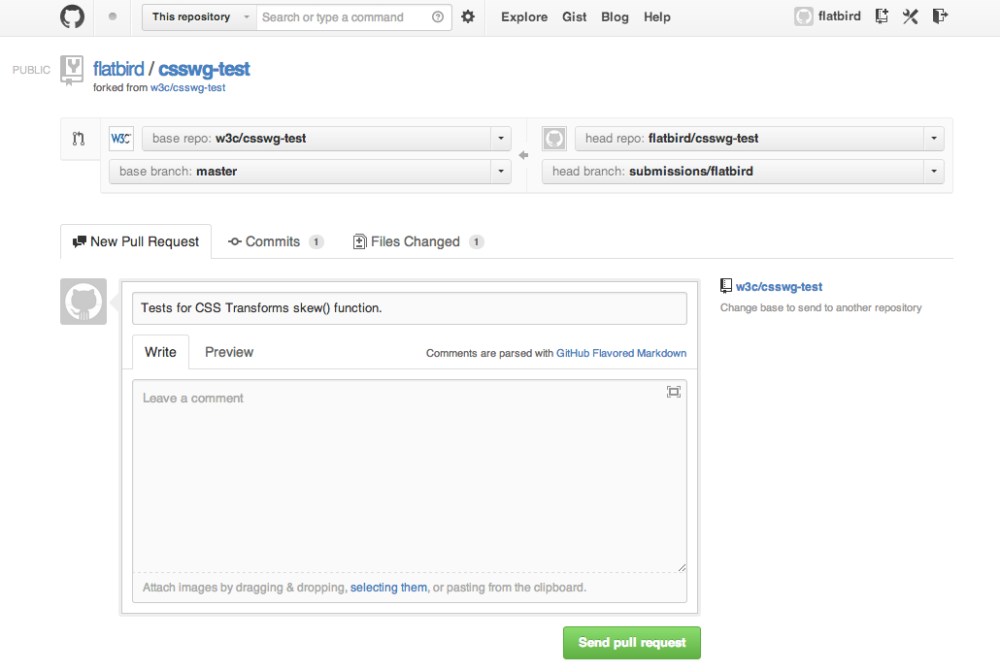

<!doctype html>
<html lang="en">

	<head>
		<meta charset="utf-8">

		<title>Test the Web Forward の予習をしてみた</title>

		<meta name="description" content="Preparation before Test the Web Forward Tokyo 2013.">
		<meta name="author" content="Hayato "flatbird" Hiratori">

		<meta name="apple-mobile-web-app-capable" content="yes" />
		<meta name="apple-mobile-web-app-status-bar-style" content="black-translucent" />

		<meta name="viewport" content="width=device-width, initial-scale=1.0, maximum-scale=1.0, user-scalable=no">

		<link rel="stylesheet" href="css/reveal.min.css">
		<link rel="stylesheet" href="css/theme/sky.css" id="theme">

		<!-- For syntax highlighting -->
		<link rel="stylesheet" href="lib/css/zenburn.css">

		<!-- If the query includes 'print-pdf', use the PDF print sheet -->
		<script>
			document.write( '<link rel="stylesheet" href="css/print/' + ( window.location.search.match( /print-pdf/gi ) ? 'pdf' : 'paper' ) + '.css" type="text/css" media="print">' );
		</script>

		<!--[if lt IE 9]>
		<script src="lib/js/html5shiv.js"></script>
		<![endif]-->
	</head>

	<body>

		<div class="reveal">

			<!-- Any section element inside of this container is displayed as a slide -->
			<div class="slides">
<section data-markdown data-separator="^\n---$" data-vertical="^\n>>>$">
<script type="text/template">
## **Test the Web Forward** の予習をしてみた

@flatbirdH

---
### Test the Web Forward というイベントが 6/7(金), 6/8(土) に開かれます。

<http://testthewebforward.org/events/tokyo-2013.html>

---
### Test the Web Forward では…
- W3C 仕様書の読み方や各ブラウザにおける対応状況を学び、
- ブラウザが Web 標準仕様を満たしているか確認するためのテストを Web 標準のエキスパート達とともにその場で開発します。
- 結果として、ブラウザー内部の仕組みと、明確で堅牢なテストを作成するためのより深い知識を得ることができます。

---
サンフランシスコ、北京、パリ、シドニー、シアトルと回り、ついに東京にやってきたそうです。


---
### そうそうない機会かなと思ったので、<br/>参加することにしました。

<div style="font-size: x-large">
ちなみに、定員 100 名はすぐに埋まってキャンセル待ちになったようです。
</div>

---
場所は Google オフィス@六本木ヒルズ


---
### タイムテーブル


- ２日目午後の "Hack" でコードを書くようです。
- ご飯におやつまで出て至れり尽くせり（´∀｀）

>>>
なお、２日目 (6/8) の懇親会は [W3C Developer Meetup Tokyo](http://www.w3.org/2013/06/meetup-Tokyo.html) と合流だそうです。

---
今回のテスト対象となる仕様の候補


---
ちなみに、参加資格は、、、
<br/><br/>
> **参加資格: HTML, CSS, JavaScript でコードが書ける方**

>>>
ま、まぁ、書けますよ。一応。(´･ω･`;)

でも、けっこうあやしいかも。。。

普段は書かないし、、、

特に CSS とか。。。

---
予習しとくことにしました

---
昨年の [Test The Web Forward Paris](http://blogs.adobe.com/webplatform/2012/11/09/test-the-web-forward-paris/) のレポートによると

Talk で説明された内容は

- [How to Read a W3C Spec](http://berjon.com/presentations/onstage.html#20121026-how-to-read-a-spec/how-to-read-a-spec.html)

- [How to Write W3C Reftest](http://adobe.github.com/web-platform/presentations/testtwf-how-to-write-a-reftest)

- [Testing With testharness.js](http://hoppipolla.co.uk/talks/ttwf/testharness.html)

---
**Reftest** / **testharness.js** というのでテストを書くらしい

---
### Reftest

- ブラウザのレンダリング結果 (見た目) のテスト。
- Test file と Reference file という２つの HTML ファイルを使うらしい。
- Test file でテスト対象の機能を使って見た目を表現。
- Reference file ではテスト対象の機能を使わずに同じ見た目を表現。
- ２つのレンダリング結果が異なっていれば **<span style="color:red">Fail</span>** !

---
Mozilla Developer Network にあった例

- Test file

```
<html><head><title>reftest0001</title></head>
<body><strong>Hello!</strong></body>
</html>
```

- Reference file

```
<html><head><title>reftest0001</title></head>
<body><b>Hello!</b></body>
</html>
```

>>>
### W3C の Reftest ファイルには色々とメタ情報を書く所がある


[css-flexbox-test-template.html](https://github.com/w3c/csswg-test/blob/master/contributors/ttwf_tokyo/starters/css-flexbox/css-flexbox-test-template.html)

でも、親切なテンプレがあるので大丈夫！

---
### Reftest の結果を自動で確認する方法が各ブラウザごとにあるらしい


- Mozilla はこの辺り
  - [Creating reftest-based unit tests](https://developer.mozilla.org/en/docs/Creating_reftest-based_unit_tests)
<br/><br/>
- WebKit は run-webkit-test というのがあるらしい
  - [Add Support for Reference Tests (aka reftests) to existing Layout Test harness](https://bugs.webkit.org/show_bug.cgi?id=36065)

<br/>
今回は使わなそうだけど、、、

---
### testharness.js

- JavaScript で書く自動テスト。
- UTっぽい感じ。
- localStorage とかのブラウザの機能をテストする。

---
HTML に testharness.js と testnarnessreport.js を<br/>インポート


- WSC のテストリポジトリにサブミットするにはパスは */resources* でないと駄目。
- *id="log"* の要素が必要。ここにテスト結果のテーブルが追加される。

---
### localStorage のテスト例

- test() に渡す関数コールバックの中で assert_xxxx() を呼んでテストする。


---
### HTML を開くとテストが実行されて結果が表示される


こんな感じ。

---
### 非同期テスト
- async_test() でオブジェクトを取得。(8 行目)
- step() に渡す関数コールバックの中でテストを実行。
- done() でテストを終了する。(19 行目)


>>>
### 補足
- 例外を投げる可能性のあるコードも step() の中で実行する。(10 行目)
- step_func() は step() を内部で実行する関数コールバックを返してくれる便利関数らしい。(14 行目)

---
### Asserts

- assert_true
- assert_false
- assert_equals
- assert_not_equals
- assert_array_equals
- assert_approx_equals
- assert_unreached
- assert_throws
<br/><br/>

他にも色々あるらしい。。。

---
testharness.js のドキュメントはこれが良さそう。

### [using-testharness.js](http://darobin.github.io/test-harness-tutorial/docs/using-testharness.html)

---
### GitHub

- テストケースの作成とサブミットは GitHub を使って行う。
- W3C のテストリポジトリをフォークする。
  - HTML5: https://github.com/w3c/web-platform-tests
  - CSS: https://github.com/w3c/csswg-test
- テストを追加して pull request してレビューを依頼する。
- 正式な手順はこちらを参照: [Github Test Submission](http://testthewebforward.org/jp/resources/github_test_submission.html)

>>>
### フォークからテストの push まで
1. W3C のテストレポジトリをフォーク。
  - HTML5: https://github.com/w3c/web-platform-tests
  - CSS: https://github.com/w3c/csswg-test
    - 既にどちらか決めていれば両方フォークしなくてもよい。
2. ローカルマシンに clone する。
  ```
  $ git clone https://github.com/<UserName>/web-platform-tests.git -o origin
  ```
  ```
  $ git clone https://github.com/<UserName>/csswg-test.git -o origin
  ```
3. ブランチを作成する
  ```
  $ git checkout -b submissions/<UserName>
  ```
4. テストを作成して push する
  - 作成して普通に add して commit する。(省略)
  - ブランチを push する。
  ```
  $ git push origin submissions/<UserName>
  ```

>>>
### Pull Request
1. フォークした自分の Github ページで "Pull Request" ボタンを押す。
3. 自分のブランチを ”submissions/&lt;UserName&gt;” に切り替える。
4. タイトルやコメントを入力して "Send Pull Request" ボタンを押す。



>>>
### レビュー依頼

> もしあなたが今 Test the Web Forward イベントに参加中ならエキスパート達にレビューを頼んでみてください。

だそうです。

---
あとは仕様を読んで、落としてきたテストリポジトリの既存テストを参考にテストを書ければ準備はばっちり！
<div style="font-size:medium">
そこまで出来る人なら説明聞きに行く必要もなくなってしまう気もするが、、、。
</div>

>>>
### 補足
他にも[事前準備](http://testthewebforward.org/events/tokyo-2013.html)がある。

</div>

---
## Good Luck!
</script>
</section>
			</div>

		</div>

		<script src="lib/js/head.min.js"></script>
		<script src="js/reveal.min.js"></script>

		<script>

			// Full list of configuration options available here:
			// https://github.com/hakimel/reveal.js#configuration
			Reveal.initialize({
				controls: true,
				progress: true,
				history: true,
				center: true,

				theme: Reveal.getQueryHash().theme, // available themes are in /css/theme
				transition: Reveal.getQueryHash().transition || 'concave', // default/cube/page/concave/zoom/linear/fade/none

				// Optional libraries used to extend on reveal.js
				dependencies: [
					{ src: 'lib/js/classList.js', condition: function() { return !document.body.classList; } },
					{ src: 'plugin/markdown/marked.js', condition: function() { return !!document.querySelector( '[data-markdown]' ); } },
					{ src: 'plugin/markdown/markdown.js', condition: function() { return !!document.querySelector( '[data-markdown]' ); } },
					{ src: 'plugin/highlight/highlight.js', async: true, callback: function() { hljs.initHighlightingOnLoad(); } },
					{ src: 'plugin/zoom-js/zoom.js', async: true, condition: function() { return !!document.body.classList; } },
					{ src: 'plugin/notes/notes.js', async: true, condition: function() { return !!document.body.classList; } }
					// { src: 'plugin/search/search.js', async: true, condition: function() { return !!document.body.classList; } }
					// { src: 'plugin/remotes/remotes.js', async: true, condition: function() { return !!document.body.classList; } }
				]
			});

		</script>

	</body>
</html>
